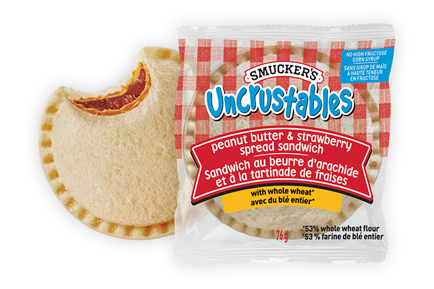

Uncrustables are similar to Band-Aids in the sense that they are a brand but typically refer to a specific kind of sandwich. Uncrustables are circular, crustless Peanut Butter sandwiches. They are often paired with jelly, but some options come with honey too. They're a moderate size and work very well as a light breakfast or even a snack to get you through the day.
As you can see, Uncrustables are a very simple, easy-to-eat item. I highly recommend that everyone tries them out. I have four classes back to back on Tuesday/Thursday and I bring two of them with me. Inbetween my second and third class, I eat them. It helps me keep up my energy for my final two classes.
For more information on the origin of Uncrustables, read
For More information on the nutirion label of Uncrustables, read
| Type | Personal Rating |
|---|---|
| Grape | 10/10 |
| Strawberry | 7/10 |
| Honey | 9/10 |
| Chocolate | 9/10 |